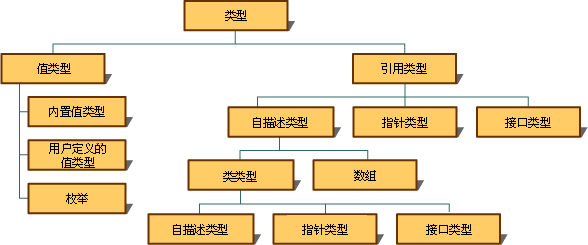
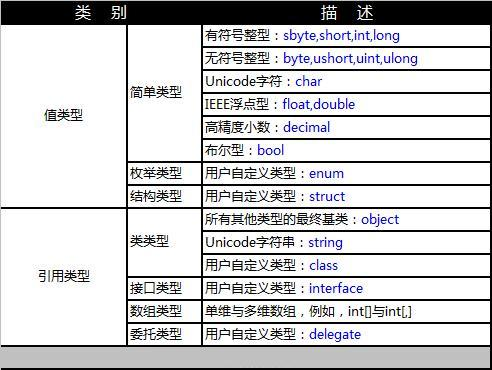
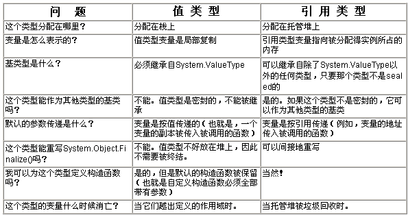

原文连接:https://www.cnblogs.com/ljdong7/p/12014527.html
常见面试题目:
1. 值类型和引用类型的区别？
2. 结构和类的区别？
3. delegate是引用类型还是值类型？enum、int[]和string呢？
4. 堆和栈的区别？
5. 什么情况下会在堆（栈）上分配数据？它们有性能上的区别吗？
6.“结构”对象可能分配在堆上吗？什么情况下会发生，有什么需要注意的吗？
7. 理解参数按值传递？以及按引用传递？
8. out 和 ref 的区别与相同点？
9. C#支持哪几个预定义的值类型？C#支持哪些预定义的引用类型？
10. 有几种方法可以判定值类型和引用类型？
11. 说说值类型和引用类型的生命周期？
12. 如果结构体中定义引用类型，对象在内存中是如何存储的？例如下面结构体中的class类 User对象是存储在栈上，还是堆上？
public struct MyStruct
{
public int Index;
public User User; 认识值类型与引用类型
万变不离其宗，只要搞清楚值类型和引用类型的原理，上面所有题目就都迎刃而解了。
-值类型与引用类型0.png) 基本概念
基本概念
CLR支持两只类型：引用类型和值类型。这是.NET语言的基础和关键，他们从类型定义、实例创建、参数传递，到内存分配都有所不同。虽然看上去简单，但真正理解其内涵的人却好像并不多。

下图清晰了展示了.NET中类型分类，值类型主要是一些简单的、基础的数据类型，引用类型主要用于更丰富的、复杂的、复合的数据类型。

内存结构
值类型和引用类型最根源的区别就是其内存分配的差异，在这之前首先要理解CLR的内存中两个重要的概念：
Stack 栈：线程栈，由操作系统管理，存放值类型、引用类型变量（就是引用对象在托管堆上的地址）。栈是基于线程的，也就是说一个线程会包含一个线程栈，线程栈中的值类型在对象作用域结束后会被清理，效率很高。
GC Heap托管堆：进程初始化后在进程地址空间上划分的内存空间，存储.NET运行过程中的对象，所有的引用类型都分配在托管堆上，托管堆上分配的对象是由GC来管理和释放的。托管堆是基于进程的，当然托管堆内部还有其他更为复杂的结构，有兴趣的可以深入了解。
结合下图理解，变量a及其值3都是存储在栈上面。变量b在栈上存储，其值指向字符串“123”的托管堆对象地址(字符串是引用类型,字符串对象是存储在托管堆上面。字符串是一个特殊的引用类型，后面文章会专门探讨)”
{kind=link}
值类型一直都存储在栈上面吗？所有的引用类型都存储在托管堆上面吗？
1.单独的值类型变量，如局部值类型变量都是存储在栈上面的；
2.当值类型是自定义class的一个字段、属性时，它随引用类型存储在托管堆上，此时她是引用类型的一部分；
4.所有的引用类型肯定都是存放在托管堆上的。
5.还有一种情况，同上面题目12，结构体（值类型）中定义引用类型字段，结构体是存储在栈上，其引用变量字段只存储内存地址，指向堆中的引用实例。
-值类型与引用类型5.png) 对象的传递
对象的传递
将值类型的变量赋值给另一个变量（或者作为参数传递），会执行一次值复制。将引用类型的变量赋值给另一个引用类型的变量，它复制的值是引用对象的内存地址，因此赋值后就会多个变量指向同一个引用对象实例。理解这一点非常重要，下面代码测试验证一下：
int v1 = 0;
int v2 = v1;
v2 = 100;
Console.WriteLine("v1=" + v1); //输出：v1=0
Console.WriteLine("v2=" + v2); //输出：v2=100
User u1=new User();
u1.Age = 0;
User u2 = u1;
u2.Age = 100;
Console.WriteLine("u1.Age=" + u1.Age); //输出：u1.Age=100
Console.WriteLine("u2.Age=" + u2.Age); //输出：u2.Age=100，因为u1/u2指向同一个对象当把对象作为参数传递的时候，效果同上面一样，他们都称为按值传递，但因为值类型和引用类型的区别，导致其产生的效果也不同。
参数-按值传递：
private void DoTest(int a)
{
a *= 2;
}
private void DoUserTest(User user)
{
user.Age *= 2;
}
[NUnit.Framework.Test]
public void DoParaTest()
{
int a = 10;
DoTest(a);
Console.WriteLine("a=" + a); //输出：a=10
User user = new User();
user.Age = 10;
DoUserTest(user);
Console.WriteLine("user.Age=" + user.Age); //输出：user.Age=20
}上面的代码示例，两个方法的参数，都是按值传递
- 对于值类型(int a) ：传递的是变量a的值拷贝副本，因此原本的a值并没有改变。
- 对于引用类型(User user) ：传递的是变量user的引用地址（User对象实例的内存地址）拷贝副本，因此他们操作都是同一个User对象实例。
参数-按引用传递：
按引用传递的两个主要关键字：out 和 ref不管值类型还是引用类型，按引用传递的效果是一样的，都不传递值副本，而是引用的引用（类似c++的指针的指针）。out 和 ref告诉编译器方法传递额是参数地址，而不是参数本身，理解这一点很重要。
代码简单测试一下，如果换成out效果是相同的
private void DoTest( ref int a)
{
a *= 2;
}
private void DoUserTest(ref User user)
{
user.Age *= 2;
}
[NUnit.Framework.Test]
public void DoParaTest()
{
int a = 10;
DoTest(ref a);
Console.WriteLine("a=" + a); //输出：a=20 ,a的值改变了
User user = new User();
user.Age = 10;
DoUserTest(ref user);
Console.WriteLine("user.Age=" + user.Age); //输出：user.Age=20
}out 和 ref的主要异同：
out和ref都指示编译器传递参数地址，在行为上是相同的；- 他们的使用机制稍有不同，ref要求参数在使用之前要显式初始化，out要在方法内部初始化；
out和ref不可以重载，就是不能定义Method(ref int a)和Method(out int a)这样的重载，从编译角度看，二者的实质是相同的，只是使用时有区别；
常见问题

题目答案解析:
1. 值类型和引用类型的区别？
值类型包括简单类型、结构体类型和枚举类型，引用类型包括自定义类、数组、接口、委托等。
- 1、赋值方式：将一个值类型变量赋给另一个值类型变量时，将复制包含的值。这与引用类型变量的赋值不同，引用类型变量的赋值只复制对象的引用（即内存地址，类似C++中的指针），而不复制对象本身。
- 2、继承：值类型不可能派生出新的类型，所有的值类型均隐式派生自 System.ValueType。但与引用类型相同的是，结构也可以实现接口。
- 3、null：与引用类型不同，值类型不可能包含 null 值。然而，可空类型允许将 null 赋给值类型（他其实只是一种语法形式，在clr底层做了特殊处理）。
- 4、每种值类型均有一个隐式的默认构造函数来初始化该类型的默认值，值类型初始会默认为0，引用类型默认为null。
- 5、值类型存储在栈中，引用类型存储在托管堆中。
2. 结构和类的区别？
结构体是值类型，类是引用类型，主要区别如题1。其他的区别：
- 结构不支持无惨构造函数，不支持析构函数，并且不能有protected修饰；
- 结构常用于数据存储，类class多用于行为；
- class需要用new关键字实例化对象，struct可以不适用new关键字；
- class可以为抽象类，struct不支持抽象；
3. delegate是引用类型还是值类型？enum、int[]和string呢？
enum枚举是值类型，其他都是引用类型。
4. 堆和栈的区别？
线程堆栈：简称栈 Stack
托管堆： 简称堆 Heap- 值类型大多分配在栈上，引用类型都分配在堆上；
- 栈由操作系统管理，栈上的变量在其作用域完成后就被释放，效率较高，但空间有限。堆受CLR的GC控制；
- 栈是基于线程的，每个线程都有自己的线程栈，初始大小为1M。堆是基于进程的，一个进程分配一个堆，堆的大小由GC根据运行情况动态控制；
6.“结构”对象可能分配在堆上吗？什么情况下会发生，有什么需要注意的吗？
结构是值类型，有两种情况会分配在对上面：
- 结构作为class的一个字段或属性，会随class一起分配在堆上面；
- 装箱后会在堆中存储，尽量避免值类型的装箱，值类型的拆箱和装箱都有性能损失，下一篇会重点关注；
7. 理解参数按值传递？以及按引用传递？
- 按值传递：对于值类型传递的它的值拷贝副本，而引用类型传递的是引用变量的内存地址，他们还是指向的同一个对象。
- 按引用传递：通过关键字out和ref传递参数的内存地址，值类型和引用类型的效果是相同的。
8. out 和 ref的区别与相同点？
out和ref都指示编译器传递参数地址，在行为上是相同的；- 他们的使用机制稍有不同，ref要求参数在使用之前要显式初始化，out要在方法内部初始化；
out和ref不可以重载，就是不能定义Method(ref int a)和Method(out int a)这样的重载，从编译角度看，二者的实质是相同的，只是使用时有区别；
9. C#支持哪几个预定义的值类型？C#支持哪些预定义的引用类型？
值类型：整数、浮点数、字符、bool和decimal
引用类型：Object，String
10. 有几种方法可以判定值类型和引用类型？
简单来说，继承自System.ValueType的是值类型，反之是引用类型。
11. 说说值类型和引用类型的生命周期？
值类型在作用域结束后释放。
引用类型由GC垃圾回收期回收。这个答案可能太简单了，更详细的答案在后面的文章会说到。
12. 如果结构体中定义引用类型，对象在内存中是如何存储的？例如下面结构体中的class类 User对象是存储在栈上，还是堆上？
public struct MyStruct
{
public int Index;
public User User;
}MyStruct存储在栈中，其字段User的实例存储在堆中，MyStruct.User字段存储指向User对象的内存地址。